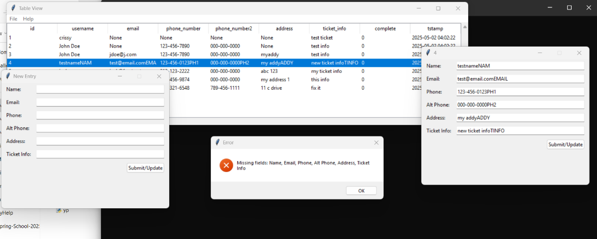
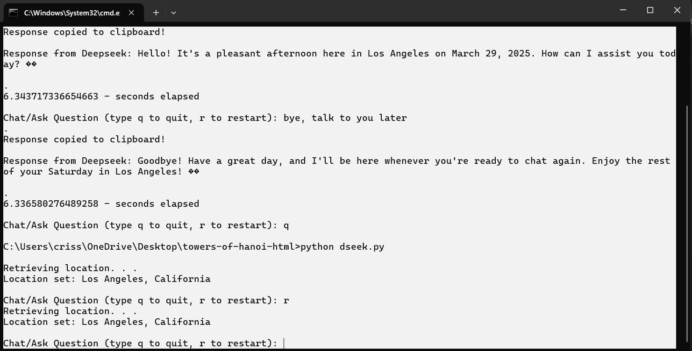
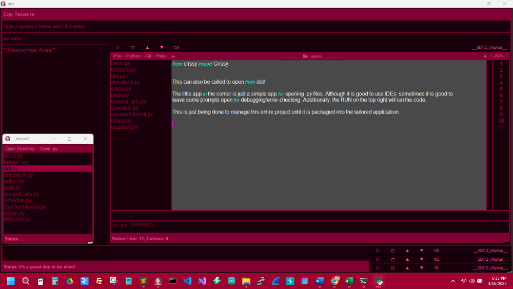

Data services are in the future! Click here to read more!,
Check out the startup page → https://xcaliburmoon.net/
Relational Data, Data Accuracy, and Work Redundancy Due To Tech!
Hello!
My name is Crissy. I currently work as a freelancer. I am working towards getting my PHD in computer science and am in my senior level of an advanced education. I want to mention that I have worked with data and businesses for a long time—basically my entire life. I have even experienced the ages of Visual Basic 4, 5, & 6. However, we all find our passion, and I have greatly liked Python lately. It just has a library for everything, and the readability is excellent. I also still place PHP as a priority for database management. I utilize macOS, Linux, and Windows. I even use Raspbian when I work with Raspberry Pi boards. Kali Linux is mainly used for cross-platform testing and security. MacOS for compatibility testing. I like Sublime Text editor when using Windows, and VIM on other operating systems, especially when working with a server. . . Click here to read more about data services!
While the name may not align with the website address above, EDITZ serves as a brand I’m developing for office applications and Personal AI Agents primarily built in Python. I focus on fostering innovative ideas and facilitating collaboration with others to establish a standardized approach to data management. This process will entail conversing and collaborating with individuals to tailor an AI agent and automation for handling tasks. By leveraging AI and LLMs, I aim to create simple applications that can reduce hours of data entry to just 30 minutes or less. Or hours of content creation to a streamlined process allowing the ability to keep everything up-to-date. Imagine if you are tasked with making advertisements, scheduling, data analysis, etc., and can set a few options and turn the task from 4 to 5 hours to 30 minutes. Most importantly, I hope to ignite creativity in this ever-evolving field.
This page is designed not only for my portfolio but also to be a resource for you. The Helpful Links section contains various links to software and reputable technology-related sites. The Projects section showcases the innovative and unique initiatives I am pursuing and tutorials for enthusiasts. Additionally, as mentioned above, this page serves as a portfolio, so if you're interested in learning more about me, feel free to click on the About Me section.
Keep checking back for more content, or if you have anything you may like to see on here, email: CrissyMoon711@gmail.com
**4-11-2025** Check out this cool and easy-to-use editor! It has templates for things like resumes and a calendar, plus a bunch of styling options to help you whip up any kind of content or documents you need. Click here to give this handy editor a try!
**04-06-2025** I made some updates to enhance the responsiveness for the calendar tool. Now, in the bottom right corner of each day, you can use the small triangle to resize the days. Additionally, the grab symbol (small triangle in the bottom right corner of each day) will disappear when you click the print button. I also improved the notes section at the bottom, allowing it to auto-size. The title and notes are not auto-saved since this is a public version, yet all the day content will remain the same, and auto-save. However, please let me know if you need a custom version for your desktop or webpage.
**04-03-2025** Hey there! I’m excited to share this handy tool that saves time when formatting and making a simple expense sheet. It’s perfect for creating budget printables! Click here to use this tool!
**Custom survey/mock-up added—03-31-2025** If you want a customized survey, email me, and we can discuss it. If you're having trouble reading the survey, check out the top right—hand corner—adjust the font size if needed. Click here to preview it!
**03-31-2025** Take a moment to check out the Towers of Hanoi puzzle! It is a fun tool to learn about recursion and data structuring in computer science and programming. When you dive into this tool, you will find a simple recursive technique written in Python—when the tool loads. Instead of going through a long tutorial, which can be extensively detailed, I would love to share a fantastic YouTube channel that covers topics related to computer science. Enjoy exploring! Click here to access the tool! You can find it in the projects section on the Projects Page, right under the tools section as well. Check out the Computerphile channel: https://www.youtube.com/@Computerphile
**03-30-2025 - Happy Sunday!** Check out this easy-to-use calendar creation tool! If you need to whip up a one-page printable calendar quickly, this is the perfect solution. Want something a bit more advanced? If you're looking for features like a login system, tracking events for future reference, or more customization options, email me, and we can chat about it. Click here to access a quick tutorial and the calendar!
**Just in – 3-29-2025** - A new tutorial has been launched to inspire your journey: DeepSeek AI Tutorial Using Python - Greetings, Let's Explore AI!/Learn to code with AI!. . .
**3-22-2025** - I just added a few website mock-ups. If you would like to suggest a mock-up or get one for your website, please let me know.
Website Mock-ups
Basic Blog Type,
Business 1-Page,
Construction Site,
Simple Shopify Site,
Custom Survey
**3-24-2025**—I wanted to share some friendly instructions for the website mock-ups after receiving valuable feedback from a thoughtful email that prefers to stay anonymous. I truly appreciate all suggestions, as they help create something lasting and fantastic! **Additional Instructions:** In the top right corner of the images, you’ll find a full-screen button that you can click. There are arrows on both sides of the images to help you scroll through them easily. And if you’re using a mobile device, it’s best to turn your phone sideways for a better view. Enjoy!


